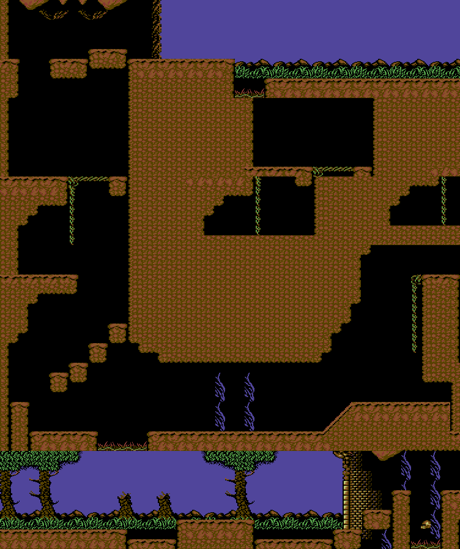
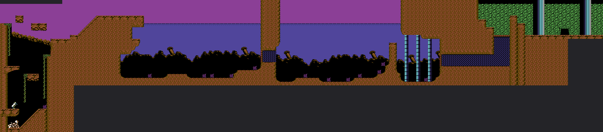
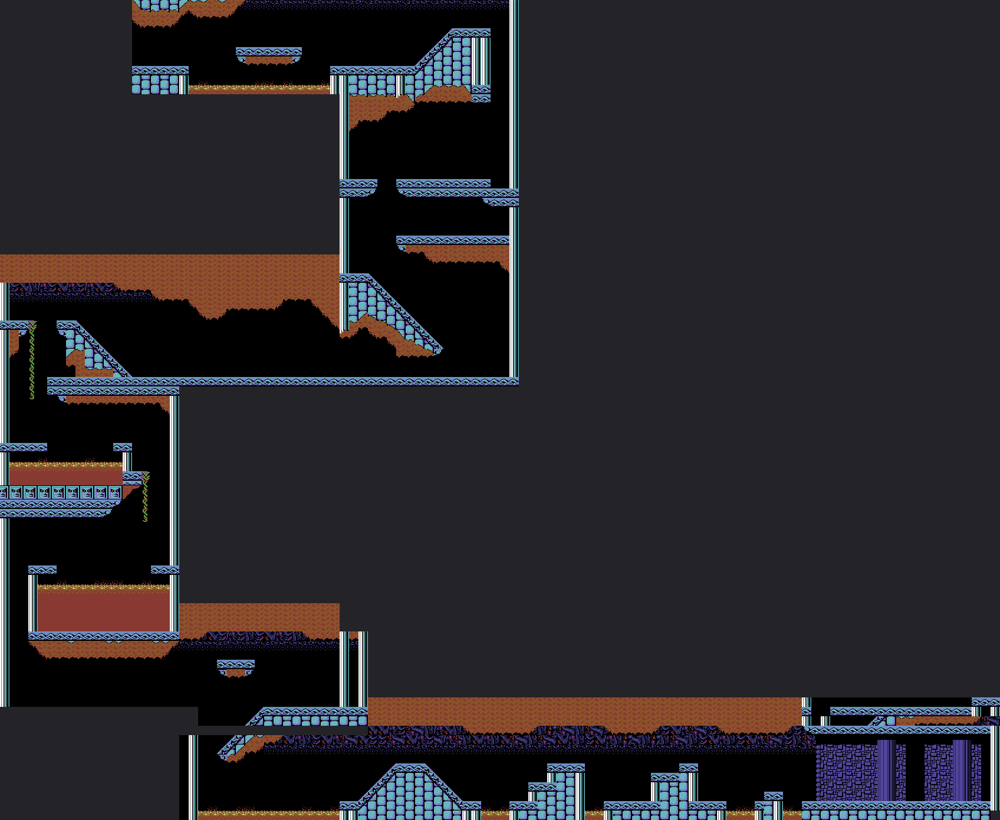
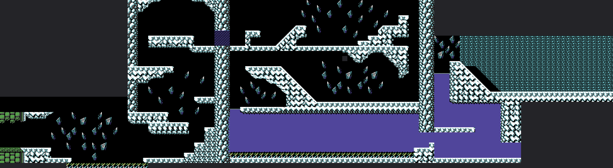
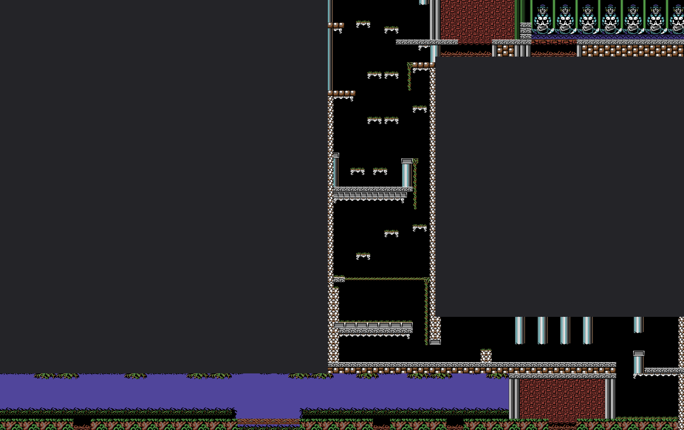

<meta charset="utf-8">
<meta name="viewport" content="width=device-width, initial-scale=1">
<title>{{title}}</title>
<link rel="preconnect" href="https://fonts.googleapis.com">
<link rel="stylesheet" href="https://fonts.googleapis.com/css2?family=Lato:wght@400;700;900&family=IBM+Plex+Mono:wght@400;500&display=swap">
<style>
:root{
  --bg:#23262d; --paper:#e9e7e1; --surface:#ffffff; --surface-2:#f1efea; --line:#d5d3cc; --line-soft:#e0ded8;
  --ink:#2f3136; --ink-soft:#55585f; --ink-mute:#80838a;
  --link:#1f5fa8; --link-hover:#154480; --accent:#1f5fa8;
  --amber:#c25a00; --cyan:#1f5fa8; --coral:#d04a3a; --green:#2a8a4a; --violet:#4a5bd6; --hl:#fff0c2;
  --chip:#2f3136; --chip-ink:#ffffff;
  --c64blue:#40318d; --c64grey:#686868;
  --fd:'Lato',system-ui,sans-serif; --fb:'Lato',system-ui,sans-serif; --fm:'IBM Plex Mono',ui-monospace,Menlo,monospace;
  --col:1080px; --gx:68px; --fs:17px; --lh:1.6; --hw:900; --h1:46px; --h2:26px; --sy:48px; --pp:26px; --r:10px;
  --plate-shadow:0 1px 2px rgba(0,0,0,.05),0 4px 14px rgba(0,0,0,.05);
}
*{box-sizing:border-box}
html{background:var(--bg);min-height:100%}
body{background:var(--paper);color:var(--ink);font-family:var(--fb);font-size:var(--fs);line-height:var(--lh);max-width:var(--col);margin:0 auto;min-height:100vh;padding:0 0 4rem}
h1,h2,h3{font-weight:var(--hw);letter-spacing:-.01em;text-wrap:balance;color:var(--ink);margin:0}
.wrap{padding:0 var(--gx)}
.hero{padding:48px var(--gx) 8px;text-align:left}
.eyebrow{font-family:var(--fm);font-size:12px;letter-spacing:.08em;text-transform:uppercase;color:var(--ink-mute);margin:0 0 10px}
.hero h1{font-size:var(--h1);line-height:1.15;letter-spacing:-.02em;margin:0 0 14px}
.hero .sub{margin:0 0 .6em;color:var(--ink-soft)}
section{padding:var(--sy) 0 24px}
table{border-collapse:collapse;width:100%;margin:18px 0;font-size:15px}th,td{text-align:left;padding:8px 12px;border-bottom:1px solid var(--line)}th{color:var(--ink-mute);font-size:12px;letter-spacing:.08em;text-transform:uppercase;font-family:var(--fm)}h3{font-size:19px;margin:28px 0 8px}
section:last-of-type{border-bottom:none}
.fig{font-family:var(--fm);font-size:12px;letter-spacing:.08em;text-transform:uppercase;color:var(--ink-mute);margin:0 0 10px}
h2.t{font-size:var(--h2);margin-bottom:12px}
.lede{color:var(--ink-soft);margin:0 0 30px}
.plate{background:var(--surface);border:1px solid var(--line);border-radius:var(--r);padding:var(--pp);box-shadow:var(--plate-shadow)}
.cap{font-size:14px;color:var(--ink-mute);margin-top:14px;line-height:1.55}
.cap b{color:var(--ink);font-weight:700}
code{font-family:var(--fm);font-size:.82em;background:var(--chip);color:var(--chip-ink);border-radius:4px;padding:2px 6px;white-space:nowrap}

</style>
<!--
  Template for a game article. Keep it self-contained: inline CSS and JS,
  fonts are the only external resource, opens from disk. The section below
  shows the parts a section is made of, not which section comes first: the
  kinds of section are listed in kit/skills/core/70-minisite, in no order,
  and this page's order is its own. The best thing to press or hear goes
  as high as the explanation lets it, and every section should have
  something the reader can press. Copy follows kit/style.md and is written
  last.
-->
<!-- tabs -->
<header class="hero">
  <p class="eyebrow">Commodore 64 · 1991 · Ocean Software</p>
  <h1>Toki</h1>
  <p class="sub">The background maps of all five stages, drawn from the game's own tables.</p>
</header>
<main class="wrap">
<section id="format">
  <p class="fig">The maps</p>
  <h2 class="t">Every stage is a stack of rows of 16-pixel blocks</h2>
  <p class="lede">Each stage's background is a single map, and the game scrolls a window over it.</p>
  <p>A stage's map is a list of rows, found through two tables of row addresses, one of low bytes <code>$002A</code> and one of high bytes <code>$002C</code>. Each byte of a row is a block number. A block is two characters wide and two high, 16 pixels square, and its number picks four characters from a table <code>$002E</code>, in the order upper left, upper right, lower left, and lower right. Each block also has a properties byte that the movement code reads <code>$0030</code>: bit 0 means solid, bit 1 harmful, and bits 2 and 3 slopes. In stage 1 the table holds 91 blocks, and the first three are plain black.</p>
  <p>The rows of a stage are not all the same length, and most rows start part-way across the map. A row holds only the columns that the stage needs there, and its address is set back by the row's first column, so the byte for column <i>x</i> is at the row address plus <i>x</i>. The game does not look the first column up anywhere. It follows from the table: a row's data ends where the next row's data begins, so the first column of a row is the end of the row above, less the distance between the two row addresses. Starting from the first byte of the block's row data, this fixes every row. The result closes at both ends: the first row begins exactly at the first byte after the block table, the last row ends exactly at the end of the row data, and every byte between belongs to one row, once. The table below gives each stage's rows by the columns they hold.</p>
  <table>
    <tr><th>Stage</th><th>Rows</th><th>Columns held, top to bottom</th></tr>
    <tr><td>1 · Labyrinth of Caves</td><td>56</td><td>10 rows of columns 0 to 46, 8 of 0 to 24, 6 of 0 to 18, and 32 of 0 to 58</td></tr>
    <tr><td>2 · Lake Neptune</td><td>34</td><td>1 row of 16 to 154, 9 of 0 to 154, 12 of 0 to 145, and 12 of 0 to 18</td></tr>
    <tr><td>3 · Caverns of Fire</td><td>87</td><td>10 rows of 14 to 54, 17 of 36 to 54, 14 of 0 to 54, 23 of 0 to 18, 3 of 0 to 35, 7 of 0 to 38, 1 of 0 to 105, 2 of 21 to 105, 1 of 39 to 105, 8 of 19 to 105, and a last row of 19 to 104</td></tr>
    <tr><td>4 · Ice Palace</td><td>33</td><td>7 rows of 25 to 84, 12 of 25 to 119, 1 of 0 to 119, 12 of 0 to 101, and a last row of 13 to 28</td></tr>
    <tr><td>5 · Dark Jungle</td><td>76</td><td>10 rows of 58 to 120, 46 of 58 to 76, 10 of 58 to 120, and 10 of 0 to 120</td></tr>
  </table>
  <p>Every block number in stages 1, 2, 3, and 5 lies inside the block table. In stage 4 one cell does not: column 67 of row 11 holds 63, and the table has 61 blocks. It is drawn as a gap. Of the whole map, 15,896 cells are drawn, and the rest of each picture is dark grey: places that no row holds. The game would read another row's bytes there if it ever scrolled that far, and the section records keep it from doing so. The last row of stage 3 stops at column 104 because the data ends there. Every row above it that reaches the right-hand wall holds a wall block in column 105.</p>
</section>
<section id="checked">
  <p class="fig">Check</p>
  <h2 class="t">The first screen of each stage matches its map</h2>
  <p>To test the pictures, the first in-game screen of each stage was compared with every window of 20 by 10 blocks in that stage's map. A window matches when each colour of the map picture lands almost entirely on one colour of the screenshot, which allows for the two pictures using different palettes. Toki, the enemies, and the status panel account for the rest. In every stage the best window is the one at the start of the stage.</p>
  <div class="tablewrap"><table><tr><th>Stage</th><th>Best window, from the top left of the map</th><th>Match</th></tr>
  <tr><td>1 · Labyrinth of Caves</td><td>column 0, row 46</td><td>92 %</td></tr>
  <tr><td>2 · Lake Neptune</td><td>column 0, row 24</td><td>97 %</td></tr>
  <tr><td>3 · Caverns of Fire</td><td>column 14, row 0</td><td>94 %</td></tr>
  <tr><td>4 · Ice Palace</td><td>column 0, row 22</td><td>96 %</td></tr>
  <tr><td>5 · Dark Jungle</td><td>column 0, row 66</td><td>95 %</td></tr></table></div>
  <p class="cap">No other place in any map matched better than 89 %, and in stages 1 to 4 the runner-up was the same screen shifted by a block or two. For stage 1 the listing's own section records agree: the first two sections together cover columns 0 to 58 and rows 46 to 55, which is the width of the picture and its bottom ten rows.</p>
  <p>The screen check covers the picture only where the player starts. The rest of each map comes from the stage data itself, unpacked from the cartridge image, and it is confirmed by arithmetic: with the first column of each row fixed as described above, the rows close at both ends of the row data and use every byte once. Where a row could start in two places, such as the long shafts of stage 3, the choice was made by looking at whether the picture joined up from one row to the next, and the arithmetic closes either way, so the picture decides. In stage 2 the other choice leaves the left shaft cut in two, and in stage 3 it breaks the lava room in half. The columns that a map holds are wider than the rectangles of the section records in some places, so the sections were not used to set the edges.</p>
</section>
<section id="stage1">
  <p class="fig">Stage 1</p>
  <h2 class="t">Labyrinth of Caves</h2>
  <div class="plate" style="overflow-x:auto"><p class="cap">The background of stage 1, 59 blocks wide and 56 high, 944 by 896 pixels. Dark grey marks places no row holds. Enemies, items, and the player are not part of the map. The three shared colours are the ones the game sets for the stage playfield.</p></div>
</section>
<section id="stage2">
  <p class="fig">Stage 2</p>
  <h2 class="t">Lake Neptune</h2>
  <div class="plate" style="overflow-x:auto"><p class="cap">The background of stage 2, 155 blocks wide and 34 high, 2480 by 544 pixels. Dark grey marks places no row holds. Enemies, items, and the player are not part of the map. The three shared colours are the ones the game sets for the stage playfield.</p></div>
</section>
<section id="stage3">
  <p class="fig">Stage 3</p>
  <h2 class="t">Caverns of Fire</h2>
  <div class="plate" style="overflow-x:auto"><p class="cap">The background of stage 3, 106 blocks wide and 87 high, 1696 by 1392 pixels. Dark grey marks places no row holds. Enemies, items, and the player are not part of the map. The three shared colours are the ones the game sets for the stage playfield.</p></div>
</section>
<section id="stage4">
  <p class="fig">Stage 4</p>
  <h2 class="t">Ice Palace</h2>
  <div class="plate" style="overflow-x:auto"><p class="cap">The background of stage 4, 120 blocks wide and 33 high, 1920 by 528 pixels. Dark grey marks places no row holds. Enemies, items, and the player are not part of the map. The three shared colours are the ones the game sets for the stage playfield.</p></div>
</section>
<section id="stage5">
  <p class="fig">Stage 5</p>
  <h2 class="t">Dark Jungle</h2>
  <div class="plate" style="overflow-x:auto"><p class="cap">The background of stage 5, 121 blocks wide and 76 high, 1936 by 1216 pixels. Dark grey marks places no row holds. Enemies, items, and the player are not part of the map. The three shared colours are the ones the game sets for the stage playfield.</p></div>
</section>
</main>
<footer style="margin:16px 0 0;padding:22px var(--gx) 0;border-top:1px solid #e0ded8;font-family:'IBM Plex Mono',ui-monospace,Menlo,monospace;font-size:12px;color:#80838a"><a href="https://github.com/gamesexplained/gamesexplained" aria-label="GitHub" style="display:inline-flex;align-items:center;justify-content:center;width:26px;height:26px;margin-left:8px;border:1px solid #e0ded8;border-radius:7px;background:#ffffff;color:#80838a;vertical-align:middle"><svg width="15" height="15" viewBox="0 0 24 24" fill="currentColor" aria-hidden="true"><path d="M12 .297c-6.63 0-12 5.373-12 12 0 5.303 3.438 9.8 8.205 11.385.6.113.82-.258.82-.577 0-.285-.01-1.04-.015-2.04-3.338.724-4.042-1.61-4.042-1.61C4.422 18.07 3.633 17.7 3.633 17.7c-1.087-.744.084-.729.084-.729 1.205.084 1.838 1.236 1.838 1.236 1.07 1.835 2.809 1.305 3.495.998.108-.776.417-1.305.76-1.605-2.665-.3-5.466-1.332-5.466-5.93 0-1.31.465-2.38 1.235-3.22-.135-.303-.54-1.523.105-3.176 0 0 1.005-.322 3.3 1.23.96-.267 1.98-.399 3-.405 1.02.006 2.04.138 3 .405 2.28-1.552 3.285-1.23 3.285-1.23.645 1.653.24 2.873.12 3.176.765.84 1.23 1.91 1.23 3.22 0 4.61-2.805 5.625-5.475 5.92.42.36.81 1.096.81 2.22 0 1.606-.015 2.896-.015 3.286 0 .315.21.69.825.57C20.565 22.092 24 17.592 24 12.297c0-6.627-5.373-12-12-12"/></svg></a><a href="https://discord.gg/3V9GWyRDWV" aria-label="Discord" style="display:inline-flex;align-items:center;justify-content:center;width:26px;height:26px;margin-left:8px;border:1px solid #e0ded8;border-radius:7px;background:#ffffff;color:#80838a;vertical-align:middle"><svg width="15" height="15" viewBox="0 0 24 24" fill="currentColor" aria-hidden="true"><path d="M20.317 4.3698a19.7913 19.7913 0 00-4.8851-1.5152.0741.0741 0 00-.0785.0371c-.211.3753-.4447.8648-.6083 1.2495-1.8447-.2762-3.68-.2762-5.4868 0-.1636-.3933-.4058-.8742-.6177-1.2495a.077.077 0 00-.0785-.037 19.7363 19.7363 0 00-4.8852 1.515.0699.0699 0 00-.0321.0277C.5334 9.0458-.319 13.5799.0992 18.0578a.0824.0824 0 00.0312.0561c2.0528 1.5076 4.0413 2.4228 5.9929 3.0294a.0777.0777 0 00.0842-.0276c.4616-.6304.8731-1.2952 1.226-1.9942a.076.076 0 00-.0416-.1057c-.6528-.2476-1.2743-.5495-1.8722-.8923a.077.077 0 01-.0076-.1277c.1258-.0943.2517-.1923.3718-.2914a.0743.0743 0 01.0776-.0105c3.9278 1.7933 8.18 1.7933 12.0614 0a.0739.0739 0 01.0785.0095c.1202.099.246.1981.3728.2924a.077.077 0 01-.0066.1276 12.2986 12.2986 0 01-1.873.8914.0766.0766 0 00-.0407.1067c.3604.698.7719 1.3628 1.225 1.9932a.076.076 0 00.0842.0286c1.961-.6067 3.9495-1.5219 6.0023-3.0294a.077.077 0 00.0313-.0552c.5004-5.177-.8382-9.6739-3.5485-13.6604a.061.061 0 00-.0312-.0286zM8.02 15.3312c-1.1825 0-2.1569-1.0857-2.1569-2.419 0-1.3332.9555-2.4189 2.157-2.4189 1.2108 0 2.1757 1.0952 2.1568 2.419 0 1.3332-.9555 2.4189-2.1569 2.4189zm7.9748 0c-1.1825 0-2.1569-1.0857-2.1569-2.419 0-1.3332.9554-2.4189 2.1569-2.4189 1.2108 0 2.1757 1.0952 2.1568 2.419 0 1.3332-.946 2.4189-2.1568 2.4189Z"/></svg></a><br>© Games Explained contributors. Write-ups, facts and symbol maps are available under <a href="https://creativecommons.org/licenses/by-sa/4.0/" style="color:#1f5fa8;text-decoration:none">CC BY-SA 4.0</a>; code under <a href="https://opensource.org/licenses/MIT" style="color:#1f5fa8;text-decoration:none">MIT</a></footer>
<script>
// Inline everything. Data extracted from the snapshot goes here as arrays.
</script>
